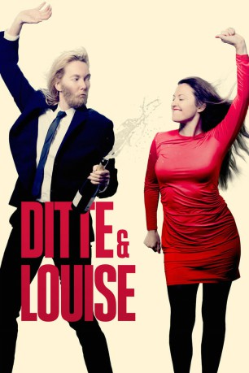

#11979 Ditte & Louise
 
 IMDB-Wertung: 6.4 / 10
IMDB-Wertung: 6.4 / 10  Metascore: 0
Metascore: 0 
This movie is about Ditte and Louise who are middle age women that wants to be famous actresses. But they realise the fact that the only thing that the Theatre is going to bring Them, is being a mom. Suddenly Ditte becomes a man and everything changes.
Jahr: 2018
Dauer: 101 Minuten
FSK:
Land: Dänemark Studio: Nordisk FilmTonspuren: - , - ,
Untertitel:
Auflösung: 720p (1280x536) Größe: 2365 MB
Genre: Komödie
Regisseur: Niclas Bendixen
Drehbuch: Ditte Hansen, Louise Mieritz
Soundtrack: Jomi Massage
Darsteller:
- Ditte Hansen als Ditte
- Louise Mieritz als Louise
- Lotte Andersen als Gritt
 Trine Dyrholm als Trine Dyrholm
Trine Dyrholm als Trine Dyrholm- Diêm Camille G. als Costume Designer
- Inge Lise Goltermann als Sexy girl
- Youssef Wayne Hvidtfeldt als Finn Holger
- Solbjørg Højfeldt als Inger
 Marijana Jankovic als Sara
Marijana Jankovic als Sara Nicolaj Kopernikus als Nicolaj
Nicolaj Kopernikus als Nicolaj Thure Lindhardt als
Thure Lindhardt als  Lars Mikkelsen als Lars Mikkelsen
Lars Mikkelsen als Lars Mikkelsen- Johannes Nymark als Anders Nabo
- Henrik Noël Olesen als Arnold
- Anders W. Berthelsen als Anders
- Morten Bjørn als
 Adam Brix als David
Adam Brix als David- Anne-Marie Curry als Maya
- Leonora Elisabeth Eriksen als Olga
- Iza Mortag Freund als Camilla
- Hanne Hedelund als Lægeskretær
- Peder Holm Johansen als Tekniker
- Amira Jensen als Rekvisitør
- Benjamin Kitter als Bruno
- Christiane Gjellerup Koch als Linda
- Sasha Sofie Lund als Tilde
- Michael Nielsen als Tilskuer
- Søren Poppel als Røde Tjalfe
- Nana Ama Rothenborg als Lars Mikkelsens elskerinde
- Ida Helene Rovsing als Production Assistent
- Sean Kruse Rye als Viggo
- Barbro Skolmen als Lærke
- Esben Smed als Esben
- Niels Anders Thorn als Jens
- Anne Sofie Wanstrup als Pia
Datei: X:\2018(A-F)\Ditte & Louise (2018, FSK, 1280x536).mkv seit 01.11.2019
Festplatte: HD 2017(A-Z)-2018(A-F)
 Es gibt insgesamt 151 Filme in der Gruppe '2018(A-F)'
Es gibt insgesamt 151 Filme in der Gruppe '2018(A-F)'